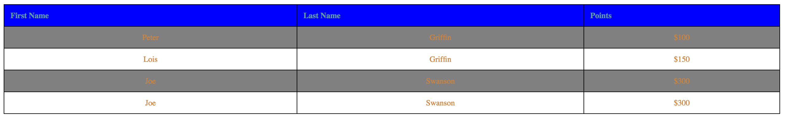

This homework helps you to apply CSS skills that you learned during the class with pratical problem sets. The answer should be written in a valid HTML and CSS form that should be rendered in Chrome browser. You can write answers in Korean. The score for this homework will take twice more portion than the first homework. If you have difficulties in understanding the question, please let me know. Slack or E-mail This homework has to be submitted by , and the solution will be provided during the class. No late submission is allowed this time due to the midterm.
Understanding CSS Concepts
Describe difference between HTML and CSS with respect to the roles they take in a web page? (5 point)
Answer:
HTML is the language for describing the structure of Web pages. CSS is the language for describing the presentation of Web pages, including colors, layout, and fonts.
CSS stands for Cascading Style Sheet, what does Cascading means? (5 point)
Answer: "Cascading" in this context means that more than one stylesheet rule could apply to a particular piece of HTML.
List three different methods to use CSS with a HTML document and write a brief decription how to use it(5 point)
Answer:
External style sheet : create a style.css file and write some style values after that link the styles.css file in a HTML file
Internal style sheet : inserted within header styletag
Inline style : A style can be added for a single element within a start tag
For the three different methods discussed at the previous problem, describe pros and cons (advantage and disadvantages) of them comparing with others(10 point)
Answer:
"external CSS"
pros -> it can share a CSS file across diffenrt HTML pages, and reduce file size. so there is lower network overhead than others
cons -> it restricts my freedom for example layout size, grid width, and others. and it is not easy to add extra code.
"Internal CSS"
pros -> easier to work as style and HTML is in a single file
cons -> if same style applies to multiple HTML documents the style has to be copied and its file size can be larger than others.
"Inline CSS"
pros -> it is easier for test than others.
cons -> it can be overriding bacause it has the highest priority. I have to apply for every elements.
When we want to set font style using CSS, we can set generic family and font family. What are the difference between them?(5 point) Which one is recommended to state as a last option to show in a web-page? (5 point)
Answer:
generic family is a set of fonts with similar look. it has to be used as a last fallback mechanism. however font family is under generic family, it has more fine grained set of fonts.
Font-family is recommended to state as a last option to show in a web-page.
When we want to control space of an element, we can use padding and margin. What are the difference between them?(5 point)
Answer:
padding is the space between the content and the border, whereas margin is the space outside the border.
When we set font size using CSS, we can use units of em, %, px. How are they different? (5 point)
Answer:
"px" is setting the text size with pixels gives you full control over the text size.
"1em" is equal to the current font size. The default text size in browsers is 16px. So, the default size of 1em is 16px.
"%" is the solution that works in all browser. it is ratio from the default size.
There are four ways to set conditional property for a sequence of elements (parent-child, siblings) - we called it as Combinator in the class. Describe the name of the four combinators with brief descripton and give a short example (10 point)
descendant selector (space)
- the style applies only to parent-child relation in the document
ex) selectorA selectorB{ }
child selector (>)
- applies to only immediate children
ex) selectorA > selectorB{ }
adjacent sibling selector (+)
- applies to elements that are only adjacent sibling element
ex) selectorA + selectorB{ }
general sibling selector (~)
- applies to all other sibling elements
ex) selectorA ~ selectorB{ }
Make an aesthetic web page using CSS
Open border-shorthand.html and fill the border-single class to have the second div element to have the same effect with the first div element. You can use only one element in the border-single CSS class. (2 point)
Open last-paragraph.html and fill in the style tag to make only the last paragraph (the third one) to have the following effects(5 point)
Make the font color as red
Make the font to be bold
Make the font size larger (xx-large)
Set the font as Arial and its corresponding generic family
Make all the characters to UPPERCASE
Using position.html file, add style elements to make the paragraphs shown like below. (8 points)
Hints
For the first and fourth paragraph, you have to use fixed position
For the second paragraph, you have to specify margin to avoid overlapping with the top most paragraph
Using table.html file, modify the table to be shown like below. You must follow the rules below.(15 point)

Specific color, font, border style does not matter unless it is specifically mentioned below
Create an external css file (file name: table.css) and link it in the table.html
The table header elements have to be left aligned
The td elements have to be center aligned
When a mouse pointer is over a row, it has to change color including the table header row (green, ...)
Make every 2nd line (line number 2, 4, 6, 8, 10, ...) to have darker color
You do not need to set the background-color for td and th elements. If you do so, making hover to change color will be harder as the solution is not covered in the class
Create following navigation bar using navigation-bar.html with the following rules - original source: original page. (25 points)
For the navigation bar background, you have to use nav-bar-bg.png file
For the navigation bar, you have to set the width as 100% and the height as 140px
The fonts size of characters is 20px, the color is #483535, and the font is Nanum Gothic
When the mouse point is over the link, it should show only one hover-icon.png file in a default location(left top) - you don't have to worry about making it same as the original site